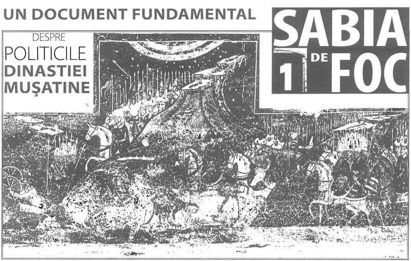

I
informațiile furnizate țarului Rusiei de un binecuvântat spion medieval
„Și a pus heruvimi și sabie de foc învârtitoare, ca să păzească intrarea la pomul vieții” (Facerea 3:24).
„Neascultarea și nepăsarea pe care au arătat-o [Adam și Eva] față de porunca dată a fost pricina că Dumnezeu a întărit așa intrarea în rai. Gândește-mi-te că iubitorul de oameni Dumnezeu nu s-a mulțumit cu atât, adică să-i așeze în fața raiului, ci a pus și puterile acestea, pe heruvimii cu sabie de foc învârtitoare, ca să păzească drumul care ducea acolo. Și nu fără rost a adăugat „învârtitoare”, ci ca să ne arate că i-a zăgăzuit orice intrare: căci sabia aceea, prin învârtirile ei, îi închidea toate drumurile care duceau în rai și putea să-l înfricoșeze necontenit și să-i aducă aminte mereu de locul din care fusese scos” Sfântul Ioan Gură de Aur, Omilii la Facere.
Începând cu acest număr, Axa va avea ca preocupare permanentă prezentarea unor evenimente, de o mare importanță în viața neamului românesc drept credincios, evenimente nearătate și nevalorificate până în prezent. Este într-o măsură, după puterile noastre și o sabie a dreptății. Ne rugăm să ne ajute și Duhul Sfânt cu sabia Sa. Aceasta este sabia de foc.
„Sursa Peresvetov” sau despre informațiile furnizate de un binecuvântat spion medieval
„Anastasia” face public, pentru prima oară după 65 de ani de la apariția lui într-una din discretele reviste teologice ale Bisericii Ortodoxe Române, textul exploziv și atât de puțin vehiculat al „Plângerii lui Ivașko Peresvetov', tradus din limba rusă de marele savant slavist Ștefan Ciobanu. Jalba a fost scrisă în secolul al XVI-lea de un curtean rus care, înainte de a se întoarce în Rusia după un lung periplu pe la cele mai faimoase curți europene, a petrecut ultimele 5 luni la curtea domnitorului Petru Rareș. Plângerea, adresată pe la 1540 țarului Ivan cel Groaznic, pivotează în întregime în jurul domnitorului Petru Rareș, ales de Peresvetov dintre toate capetele încoronate ale Europei creștine ca model de înțelepciune și dreaptă-credință și cuprinde citate masive din „zicerile” esențiale ale voievodului moldovean. La vremea respectivă, scrierea s-a bucurat în Rusia de o largă notorietate, servind, pare-se, țarilor ruși, dar numai până la Petru cel Mare!, drept manual de domnie.
Pentru orgoliul mesianic rusesc și cu atât mai răzbit pentru versiunea lui bolșevică actuală, textul lui Peresvetov este și astăzi cât se poate de puțin flatant, mai curând compromițător, de vreme ce deconspiră faptul că, timp destul de îndelungat, modelul de cap încoronat al teribililor țari ruși, autorii Marii Rusii, a fost un voievod, chipurile, venetic, de undeva de prin părțile Moldovei! În plus, atât timp cât rușii vor continua să călărească nepedepsiți cocoașa României și nu vor lepăda habitusurile imperialiste, denunțate fățiș chiar și de Soljenițîn, scrierea lui Peresvetov va fi în continuare persecutată și socotită un text periculos, subversiv și antirusesc… Aceste conotații politice explică și suspecta discreție așternută atâta amar de vreme asupra textului, cât și difuzarea lui aproape inexistentă. De aceea avem convingerea că urgenta lui răspândire în România (cel puțin!) este absolut necesară.
La patru secole distanță, cititorul de astăzi are la dispoziție, păstrate ca prin miracol, principalele articulații ale tipului de gândire care a clădit impresionantele arhitecturi și iconografii ale bisericilor din Nordul Moldovei. În penuria de informații asupra acestei epoci, textul lui Peresvetov este un text providențial, o mostră unică de gândire medievală, care, în ce privește deslușirea patrimoniului românesc, concurează ca importanță - firește, păstrând proporțiile - cu celebrele memorii ale abatelui Suger de la Saint-Denis, părintele viziunii gotice. Într-un cuvânt, citindu-l, oricine își poate da seama ce și cum gândea Petru Rareș, iar prin extensie absolut logică, ce și cum gândea și părintele acestuia, dreptcredinciosul Ștefan cel Mare și Sfânt.
Este greu de înțeles cum de s-au mulțumit istoricii de artă, care au cunoscut scrierea, să o răsfoiască în grabă, fără să-i sesizeze importanța capitală. Exceptând pe cei cărora s-ar putea să le fi lipsit textul, notele și traducerea integrală ale acestuia fiind definitivate abia în deceniul al 4-lea al secolului trecut, ne surprinde că celorlalți le-a părut fie irelevant, fie suficient de convingător comentariul excesiv de prudent, dacă nu cumva chiar autocenzurat, al traducătorului Ștefan Ciobanu. Forțat probabil de vremurile periculoase în care textul a văzut lumina tiparului, dar dornic, înainte de toate, să-i scoată totuși la iveală extraordinarele conținuturi ale plângerii, eminentul slavist nota precaut că, asemenea altor „narațiuni” medievale, și cea a lui Peresvetov ar putea reprezenta o mărturie scrisă a cărei autenticitate destul de relativă ar situa-o mai degrabă în rândul „invențiilor literare, în care, așa cum se obișnuia și pentru a le spori credibilitatea, autorul medieval punea în gura vreunui cârmuitor de seamă „propriile sale păreri adunate din cărți sau, poate, căpătate din experiența vieții”. În acest caz, oricine se poate întreba cu justificată nedumerire, de ce n-a folosit Peresvetov credibilitatea „gurilor” unor Sigismund I al Poloniei, Ioan Zapolia al Ungariei sau Ferdinand de Habsburg al Boemiei, în proximitatea cărora zăbovise destul de mult timp - suverani europeni cu mult mai notorii în epocă decât Petru Rareș? De unde - s-ar putea întreba oricine - această precipitare a cărturarului de a rândui cu atâta ușurință scrierea respectivă în tipologia narațiunilor și de a exclude astfel complet eventualitatea ca, dimpotrivă, relatarea lui Peresvetov să fi fost cât se poate de autentică, dacă nu de teama cruntei represiuni bolșevice? Iată de ce, s-ar putea ca singurul defect sau mărginire a textului să fie de fapt acela de a fi cuprins doar ceea ce a înțeles sau a reușit să țină minte curteanul rus din spusele „voievodului românesc”! De altfel, pentru a-l determina pe cititor să pătrundă și printre rândurile textului, traducătorul are grijă să declare în altă parte că într-adevăr „Petru Rareș se bucura în ochii Rușilor de un deosebit prestigiu”, ferindu-se să explice cititorului și pe ce se întemeia acest prestigiu.
Din capul locului trebuie spus că ideile cuprinse în jalba lui Peresvetov mărturisesc o altitudine conceptuală și o autoritate teologică și politică proprii mai curând unui voievod dornic să resuscite cu orice preț augusta tradiție a bazileilor bizantini, decât mentalității mondene specifice curteanului-aventurier.
Astfel, chintesența cuvintelor de folos pe care le adresează Petru Rareș lui Ivan cel Groaznic o constituie recomandarea expresă, prin care debutează atât de neașteptat seria „zicerilor” voievodului, ca țarul rusesc să citească „până la sfârșit” luarea Constantinopolului de către oștirile sultanului Mahomed: „Așa zice Petre, voievodul românesc: «Dacă vrei să cunoști înțelepciunea împărătească, să știi despre oștire și despre așezămintele vieții împărătești, atunci să citești până la sfârșit luarea Constantinopolului (în original взять Царйград) să nu cruți pe sine cu nimic și acolo vei găsi tot ajutorul lui Dumnezeu».
Așadar, domnitorul moldovean nu considera priveliștea căderii Constantinopolului drept o imagine care nu s-ar cuveni să fie oferită contemplației publice, cum greșit a crezut, la patru secole distanță, marele medievist A. Grabar; dimpotrivă, el socotea că exercițiul (practica) acestei lecturi/contemplări furnizează credinței o perspectivă nebănuită pentru înțelegerea profundă a misterioasei lucrări a Proniei dumnezeiești, iar celor care domnesc asupra neamurilor le dăruie mare înțelepciune. Această mare dezvăluire ar fi trebuit să declanșeze instantaneu comentatorilor sinapsa menită să lege imediat textul începător al Jalbei cu excepționala postură iconografică de care se bucură celebra frescă exterioară a așa-zisului asediu al Constantinopolului, așezată, la toate bisericile ctitorite de Petru Rareș, în dreapta intrării. În opinia noastră, miopia traducătorului și implicit a medieviștilor care au cunoscut textul lui Peresvetov (rusesc sau tradus) constă în faptul de a nu fi sesizat coincidența absolut remarcabilă dintre conținutul recomandării așezate în fruntea „zicerilor” și subiectul scenei militare, cu statut iconic privilegiat, al Luării Constantinopolului. Această lipsă de perspicacitate a întârziat identificarea frescei ca imagine-reper a Luării Constantinopolului, deturnânt interpretarea pe traseul incomparabil sofisticat al analogiei sau al parabolei. Mai simplu spus, nu „scena” Luării Constantinopolului a fost adăugată programului iconic, ci programul a fost alcătuit în funcție de aceasta, model pe care îl găsim în scrierea curteanului rus, unde ideile lui Petru Rareș asupra istoriei și lucrării Proniei sunt deduse și decurg constant din contemplarea aceleiași „scene”! În esență, „scena” Luării Constantinopolului și „recomandarea” din scrierea lui Peresvetov se girează reciproc și își garantează una alteia identitatea și autenticitatea.

Petru Rareș considera teribila cădere a capitalei creștine ca un dezastru, firește, dar un dezastru izbăvitor, înrudit iconic și teologic cu cataclisme redemptorii de tipul Robiei Egiptului, Potopului, dar, mai ales, Apocalipsei. Aceasta este de fapt „rudenia de sus” subînțeleasă, care face ca „scena” Luării Constantinopolului să rimeze perfect cu perspectiva eshatologică care animă în totalitate conținuturile frescelor exterioare și astfel să poată satisface oricând exigențele unui „ordonator de picturi ortodoxe”. Fresca Luării Constantinopolului actualizează iconic „teologia sfârșitului timpurilor” și a „pregătirii” înfricoșatei Judecăți. De aceea, cea de a doua ipoteză, credem mult prea deșteaptă, a enclavei „mai laice”, „mai descriptiv-plastice”, „mai realiste”, strecurate dibaci în contextul hieratic general de către zugravii medievali excedați, pare-se, de atemporalitatea și stereotipia canonului bizantin, cade de la sine.
Transpuse în limbajul nostru de astăzi, părerile domnitorului, sau mai exact, teologia politică a acestuia asupra căderii Bizanțului, așa cum pot fi acestea deduse din scrierea lui Peresvetov, ar fi următoarele:
- înțelepciunea Proniei divine este cea care a hotărât să suspende istoric slava Bizanțului.
„Și așa zice cu lacrimi la ochi voievodul românesc despre credința creștină: după păcatele noastre s-a întâmplat că am căzut în robia necredinciosului și străinilor de neam, pentru fărădelegea grecească, că Grecii au părăsit lumina pentru întunerec, au căzut în toate în herezie și l-au mâniat pe Dumnezeu cu mânie nepotolită.”
- fiind cotropit de nedreptate și erezie, Constantinopolul, inima Imperiului bizantin și axul creștinătății, a trebuit să fie în cele din urmă surpat.
„Și zice voievodul românesc, Petru: au fost Grecii leneși de a apăra tare credința creștină în contra necredincioșilor și prin aceasta au predat străinilor de neam, Turcilor, spre batjocură, și împărăția grecească, și credința creștină, și frumusețea bisericească… Astăzi, nevroind, apără credința păgână de invazie.”
- victoria lui Mahomed descoperă hotărârea Proniei de a risipi nedreptatea și erezia din Bizanț folosind tocmai dreptatea vrăjmașilor acestuia.
„Atunci necredinciosul, Mahmed-sultanul, împăratul turcesc străin de neam, a cunoscut puterea lui Dumnezeu, a luat Țarigradul și a organizat în împărăția sa judecata dreaptă, pe care o iubește Dumnezeu, și l-a mângâiat pe Dumnezeu cu bucuria inimei, și pentru aceasta Dumnezeu îl ajută a poseda multe împărății.”
„Și Mahmed-sultanul, bătându-l pe împăratul Constantin și luând pentru sine împărăția creștină în ajutor, i-a fost dată împărăția lui Dumnezeu pentru păcatele lor (Grecilor) și a trufiei, pentru că ei îndepărtau lumea de la împărat…”
„Așa zice voievodul românilor despre primul împărat turcesc, Mahmed-sultanul: necredinciosul împărat a introdus în împărăția sa plăcută lui Dumnezeu marea înțelepciune și dreptate.”
- lucrarea Proniei asupra Constantinopolului îndeamnă la dobândirea deprinderii de a așeza întotdeauna dreptatea înaintea credinței, după modelul dreptei credințe, altfel spus, ortodoxia credinței este mai de preț în fața lui Dumnezeu decât credința simplă, pietistă.
„Așa zice voievodul românesc: Dumnezeu iubește nu credința, ci dreptatea. Dreptatea adevărată este Hristos Dumnezeul, Fiul iubit al lui Dumnezeu, în una Treime, în dumnezeire nedespărțită, singură dumnezeire și putere. Și să ne lasă nouă dreptatea Evangheliei, iubind credința creștină pe deasupra tuturor credinților, și ne-a arătat calea împărăției cerești în Evanghelie. Și Grecii citeau Evanghelia, iar alții o ascultau, iar voia lui Dumnezeu nu o făceau, au pus ocară pe Dumnezeu și-au căzut în herezie…”
- contemplarea perpetuă a Luării Constantinopolului poate cuminți lumea și o poate deprinde cu modul în care Providența lucrează în istorie.
Formulat probabil la mai puțin de un secol de la tragicul eveniment al prăbușirii Bizanțului, corpusul de reflecții rezumate mai sus e lipsit, după cum se poate vedea, de orice accent nostalgic și străin de tânguirea pietistă. Cunoașterea silogismelor lui neobișnuite, dar atât de conforme bazileilor bizantini, impun reprezentarea Luării Constantinopolului, figurată la bisericile din nordul Moldovei, drept o icoană ortodoxă în toată puterea cuvântului. Prototipul la care trimite nu este însă, cum s-a crezut, nici asediul perșilor lui Cosroes, și nici măcar Luarea Constantinopolului, așa cum s-ar putea crede, ci icoana lucrării Proniei în istorie Luarea Constantinopolului este icoana în frescă a Lucrării Providenței.
Dispariția subită a icoanei Lucrări Providenței (Luarea Constantinopolului), imediat după moartea voievodului Petru Rareș și a mitropolitului Grigorie Roșca, va dezamorsa conținutul polemic al întregului program. O dată ucis nervul, relieful vizual și proniator al întregului discurs iconografic se va atrofia treptat. Lipsit de icoana Lucrării Providenței, el va continua să mai fie prezent o vreme pe ziduri (Arbore, Sucevița), diluându-și treptat misterul vibrant în ipostaze din ce în ce mai rafinate, dar și mai plate dogmatic, pentru a se stinge complet la mai puțin de 50 de ani de la moartea ctitorului său. După aceea nu-l va mai relua nimeni, niciodată. În mod indirect, este dovada tăcută, dar absolută, a paternității voievodului-iconograf asupra „zicerilor” transmise nouă de curteanul Peresvetov.
Sorin DUMITRESCU
Comentarii